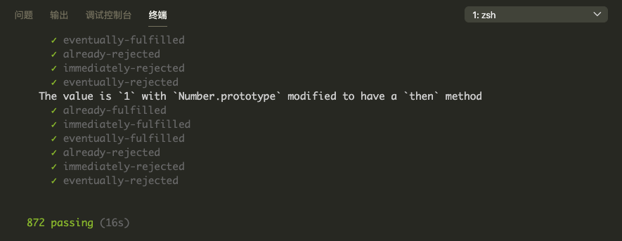

# JS 理解 Promise
前段时间刷到了一个面试题，手写一个 Promise，发现要实现一个符合规范的 Promise 还真不简单，所以单独抽离出来总结一下。
# Promise/A+ 规范解读
要实现一个 Promise，首先应该遵守一下 Promise/A+ 规范规范，由于规范涉及面很广，这里就不详细介绍了，只介绍一下最核心的部分。
# Promise 的状态
Promise 的状态只有 3 中：等待态（pending）、完成态（fulfilled）或拒绝态（rejected）。
Promise 中的状态只能按以下方式改变：一旦状态发生改变，就定死了，再也不能改变了。
- pending -> fulfilled
- pending -> rejected
# Promise 的 then 方法
then 方法需要传递 2 个函数，分别为 Fulfilled 状态和 Rejected 状态的回调函数。
promise.then(onFulfilled, onRejected);
- 如果 onFulfilled 和 onRejected 不是函数，则会被忽略。
- 如果 onFulfilled 是一个函数，则当 Promise 状态转变成 Fulfilled 时，会被触发，并能获取 Resolve 中传递的值。
- 如果 onRejected 是一个函数，则当 Promise 状态转变成 Rejected 时，会被触发，并能获取 Reject 中传递的值。
- then 方法可以被多次调用，按照调用顺序执行代码。
- then 方法同样返回一个 Promise 对象。
# Promise 的解析过程
当 Promise 的 resolve 方法调用时，会传入一个值，Promise 会根据值类型的不同，进行不同的处理。
- 如果 resolve 的参数是 Promise 本身，则会报循环 Promise 错误。
- 如果 resolve 的参数是一个 新 Promise，则会等待新 Promise 的状态改变后，返回新 Promise 的值。
- 如果新 Promise 的状态不是 Fulfilled 或者 Resolve，调用新 Promise 的 then 方法，直到状态改变为止。
- 如果 resolve 的参数是一个对象或者函数，会检查是否含有 then 方法，如果有，则会被当成一个新 Promise 处理（通过上一步的方式处理）。
- 其他情况，则会直接返回 resolve 中的值。
# 手写一个 MyPromise
基于上面的规则，我们一起来手写一个 Promise。
# Promise 自身的状态
1、state 存放当前的状态。
2、value 存放成功状态的值。
3、reason 存放失败状态的值。
4、then 方法，返回值也是一个 Promise。
5、catch 方法。
6、finally 方法，成功和失败都会调用一次。
7、静态方法，如 Promise.all、Promise.resolve。
# 实战具体 Case 校验
1、实现一个 promise ，在 setTimeout 中去 resolve。 ok
2、实现一个 promise，支持同步 resolve。 ok
3、实现一个 promise，防止 resolve 多次。 ok
4、实现一个 promise，可以让 then 方法链式调用。 ok
5、实现一个 promise，支持空 then 函数。 ok
6、实现一个 promise，支持 then 传递 thenable 对象。 ok
7、实现一个 promise，支持 then 传递 promise 对象。 ok
8、实现一个 promise，支持 resolve 传递 promise 对象。 ok
9、实现一个 promise，处理 then 中的循环 promise。 ok
10、实现一个 promise，支持静态方法 Promise.all。 ok
11、实现一个 promise，支持 reject 和 catch。 ok
12、实现一个 promise，支持处理完成态或失败态的 then。 ok
除此之外，本代码已经通过 promises-aplus-tests 下 872 个 case。

// promise 的三种状态
const PENDING = "pending";
const FULFILLED = "fulfilled";
const REJECTED = "rejected";
// promise 处理过程
function promiseResolutionProcedure(promise2, x, resolve, reject) {
if (promise2 === x) {
return reject(new TypeError("循环引用 promise"));
}
let called; // 判断 then 中返回的对象多次调用 resolve 或 reject
// 判断 thenable 对象（promise 对象也是一个 thenable）
if ((x !== null && typeof x === "object") || typeof x === "function") {
try {
const then = x.then;
if (typeof then === "function") {
then.call(
x,
(y) => {
if (called) return;
called = true;
promiseResolutionProcedure(promise2, y, resolve, reject);
},
(reason) => {
if (called) return;
called = true;
reject(reason);
},
);
} else {
resolve(x);
}
} catch (e) {
if (called) return;
called = true;
reject(e);
}
} else {
resolve(x);
}
}
class MyPromise {
// 处理静态方法
static all(promiseArray) {
return new MyPromise((resolve, reject) => {
const resultArray = [];
let successTimes = 0;
function processResult(index, data) {
resultArray[index] = data;
successTimes++;
if (successTimes === promiseArray.length) {
// 处理成功
resolve(resultArray);
}
}
for (let i = 0; i < promiseArray.length; i++) {
promiseArray[i].then(
(data) => {
processResult(i, data);
},
(err) => {
// 处理失败
reject(err);
},
);
}
});
}
static race(promiseArray) {
return new MyPromise((resolve, reject) => {
promiseArray.forEach((promiseFn) => {
promiseFn.then((data) => {
resolve(data);
}, reject);
});
});
}
static allSettled(promiseArray) {
return new MyPromise((resolve, reject) => {
const resultArray = [];
let successTimes = 0;
function processResult(index, data) {
resultArray[index] = data;
successTimes++;
if (successTimes === promiseArray.length) {
// 处理成功
resolve(resultArray);
}
}
for (let i = 0; i < promiseArray.length; i++) {
promiseArray[i].then(
(data) => {
processResult(i, { status: "fulfilled", value: data });
},
(err) => {
processResult(i, { status: "rejected", reason: err });
},
);
}
});
}
static resolve(val) {
return new MyPromise((resolve) => {
resolve(val);
});
}
static reject(val) {
return new MyPromise((resolve, reject) => {
reject(val);
});
}
constructor(fn) {
this.state = PENDING;
this.value = undefined;
this.reason = undefined;
this.resolvedCallbacks = [];
this.rejectedCallbacks = [];
this.finallyCallbacks = [];
const resolve = (val) => {
if (this.state === PENDING) {
// 规范没有这一条，但chrome 是这样实现的
// 如果 resolve 一个 thenable，也会进行 promise 执行过程处理
// if (
// (typeof val === "object" || typeof val === "function") &&
// val.then
// ) {
// promiseResolutionProcedure(this, val, resolve, reject);
// return;
// }
this.state = FULFILLED;
this.value = val;
// 执行所有的 then 方法
this.resolvedCallbacks.map((fn) => fn());
// 最后执行 finally 方法
this.finallyCallbacks.map((fn) => fn());
}
};
const reject = (val) => {
if (this.state === PENDING) {
// 规范没有这一条，但chrome 是这样实现的
// 如果 resolve 一个 thenable，也会进行 promise 执行过程处理
// if (
// (typeof val === "object" || typeof val === "function") &&
// val.then
// ) {
// promiseResolutionProcedure(this, val, resolve, reject);
// return;
// }
this.reason = val;
this.state = REJECTED;
// 执行所有的 then 方法
this.rejectedCallbacks.map((fn) => fn());
// 最后执行 finally 方法
this.finallyCallbacks.map((fn) => fn());
}
};
try {
fn(resolve, reject);
} catch (e) {
reject(e);
}
}
then(onFulfilled, onRejected) {
onFulfilled =
typeof onFulfilled === "function" ? onFulfilled : (data) => data;
onRejected =
typeof onRejected === "function"
? onRejected
: (err) => {
throw err;
};
let promise2 = new Promise((resolve, reject) => {
// 处理已经完成的promise
if (this.state === FULFILLED) {
setTimeout(() => {
try {
const x = onFulfilled(this.value);
promiseResolutionProcedure(promise2, x, resolve, reject);
} catch (e) {
reject(e);
}
});
}
// 处理已经完成的 promise
if (this.state === REJECTED) {
setTimeout(() => {
try {
let x = onRejected(this.reason);
promiseResolutionProcedure(promise2, x, resolve, reject);
} catch (e) {
reject(e);
}
});
}
// 处理尚未完成的 promise
if (this.state === PENDING) {
this.resolvedCallbacks.push(() => {
setTimeout(() => {
try {
const x = onFulfilled(this.value);
promiseResolutionProcedure(promise2, x, resolve, reject);
} catch (e) {
reject(e);
}
});
});
this.rejectedCallbacks.push(() => {
setTimeout(() => {
try {
const x = onRejected(this.reason);
promiseResolutionProcedure(promise2, x, resolve, reject);
} catch (e) {
reject(e);
}
});
});
}
});
return promise2;
}
catch(onRejected) {
return this.then(null, onRejected);
}
finally(fn) {
this.finallyCallbacks.push(fn);
}
}
2
3
4
5
6
7
8
9
10
11
12
13
14
15
16
17
18
19
20
21
22
23
24
25
26
27
28
29
30
31
32
33
34
35
36
37
38
39
40
41
42
43
44
45
46
47
48
49
50
51
52
53
54
55
56
57
58
59
60
61
62
63
64
65
66
67
68
69
70
71
72
73
74
75
76
77
78
79
80
81
82
83
84
85
86
87
88
89
90
91
92
93
94
95
96
97
98
99
100
101
102
103
104
105
106
107
108
109
110
111
112
113
114
115
116
117
118
119
120
121
122
123
124
125
126
127
128
129
130
131
132
133
134
135
136
137
138
139
140
141
142
143
144
145
146
147
148
149
150
151
152
153
154
155
156
157
158
159
160
161
162
163
164
165
166
167
168
169
170
171
172
173
174
175
176
177
178
179
180
181
182
183
184
185
186
187
188
189
190
191
192
193
194
195
196
197
198
199
200
201
202
203
204
205
206
207
208
209
210
211
212
213
214
215
216
217
218
219
220
221
222
223
224
225
226
227
228
229
230
231
232
233
234
235
236
237
238